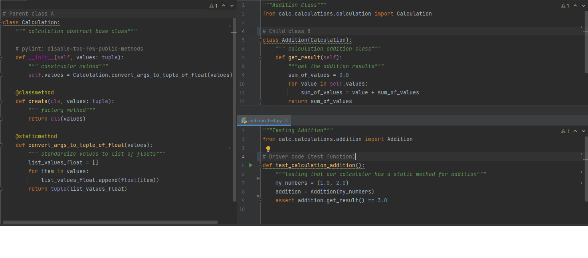

Inheritance
Inheritance is the capability of one class to derive or inherit the properties from another class. The benefits of inheritance are:
- It represents real-world relationships well
- It provides reusability of a code and allows us to add more features to a class without modifying it.
- It is transitive in nature, which means that if class B inherits from another class A, then all the subclasses of B would automatically inherit from class A
Below is an example of inheritance in Python
The class, Calculation is the parent class and Addition is the child class. The child class takes Calculation as an argument and inherits the attributes and methods from the Calculation class.
As a result, the test function is able to create an Addition object with the Calculation properties. The Addition object is instantiated with the values of 1.0 and 2.0 using the __init__ constructor method from Calculation.
and then the test function uses the get_result method from Addition to calculate the answer.